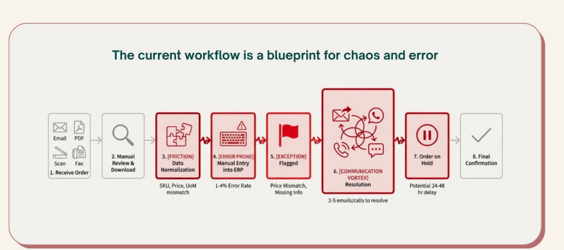

Eight steps. Three failure modes. Up to one-third of orders enter the exception flow — where 2–5 emails and calls are needed to resolve a single ambiguity, stretching delivery by 24–48 hours.

3Friction · SKU / Price / UoM normalization
4Error-prone manual ERP entry (1–4% rate)
5Exceptions flagged · price mismatch, missing info